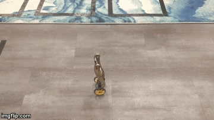
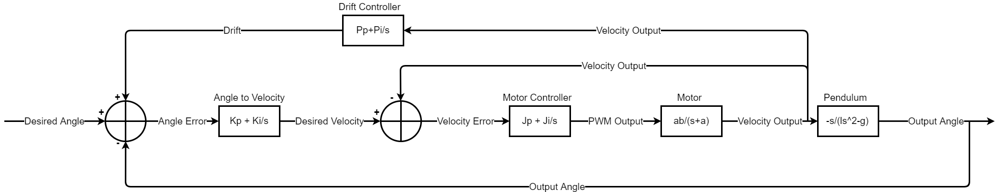
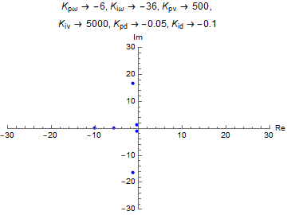

Stand Up Rocky!
As part of my Quantitative Engineering Analysis class, in a team of two, we modelled an inverted pendulum and wrote a PI controller to allow a Pololu Balboa to stand up and remain in its position without drifting, once it was propped up. By the end the project, our robot could stand up without drifting for more than 45 minutes.
We started off by modelling the motion of an inverted pendulum. With the appendage attached to the robots (as seen in the GIF above) and the weight attached to it at its end, it was a fair assumption to model the robot as an inverted pendulum. This allowed us to come up with a controls algorithm that could easily make the robot stand up. The challenge came with trying to limit the translational drift of the robot from its origin, as it was trying to balance.
In order to limit the drift of the robot, we implemented another PI controller on the measured velocity of the wheels of the robot. This effectively found the error in position of the robot from its origin position and allowed it to keep standing within a foot of its origin position. The final controls algorithm that we implemented can be seen in the figure above. In total there were three PI controllers, one for the angle of the robot (trying to keep it at 0), one for giving the PWM output to the wheels depending on their velocities and one to prevent drift.
Before using Arduino to do physical implmentation of the controls algortihm that we devised, we used Mathematica to determine
numerical values for our controllers. After doing a zero-pole analysis, we tried to keep the poles of our PWM and drift controllers
to have all real poles, that are really close to their pairs - in order to have a slightly underdamped system.
Later, we realized that the drift controller having some imaginary component (allowing for oscillations) made the system more robust,
by tolerating a little bit of drift (less than a foot in amplitude). We didn't try to implement a critically damped system, as we found
it to be mechanically not feasible. The poles that have imaginary values belong to the angle controller. Since, overshooting is very easy
with the angle controller, we kept the poles that allowed for a period of about 3 seconds.
- Design: HTML5 UP